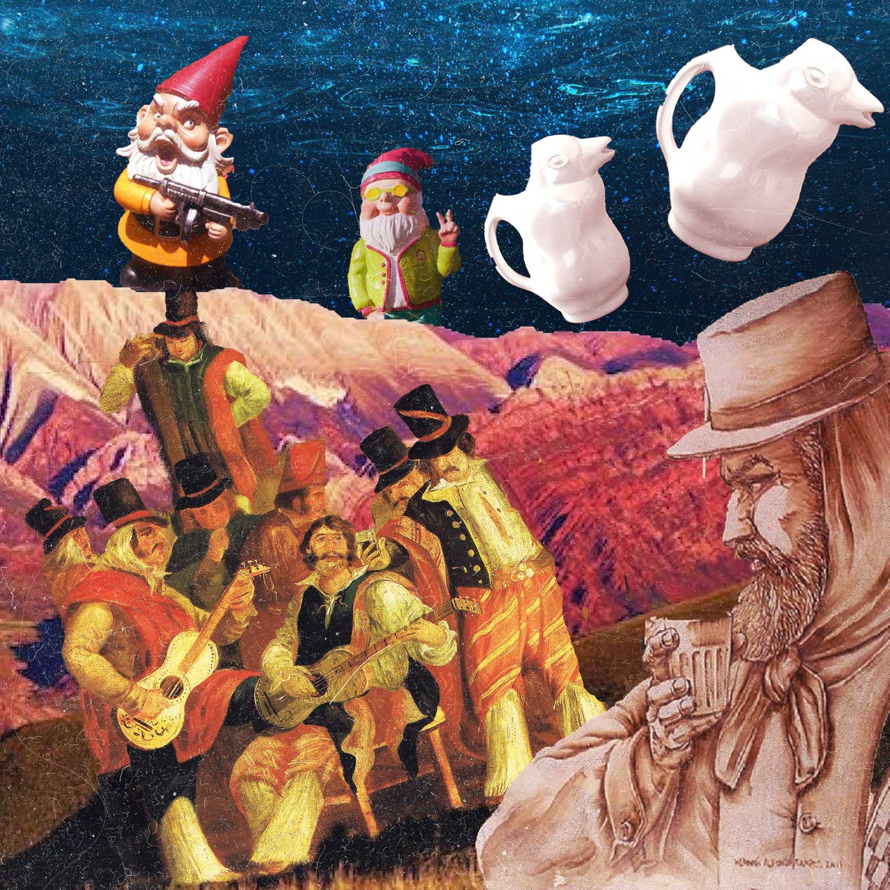
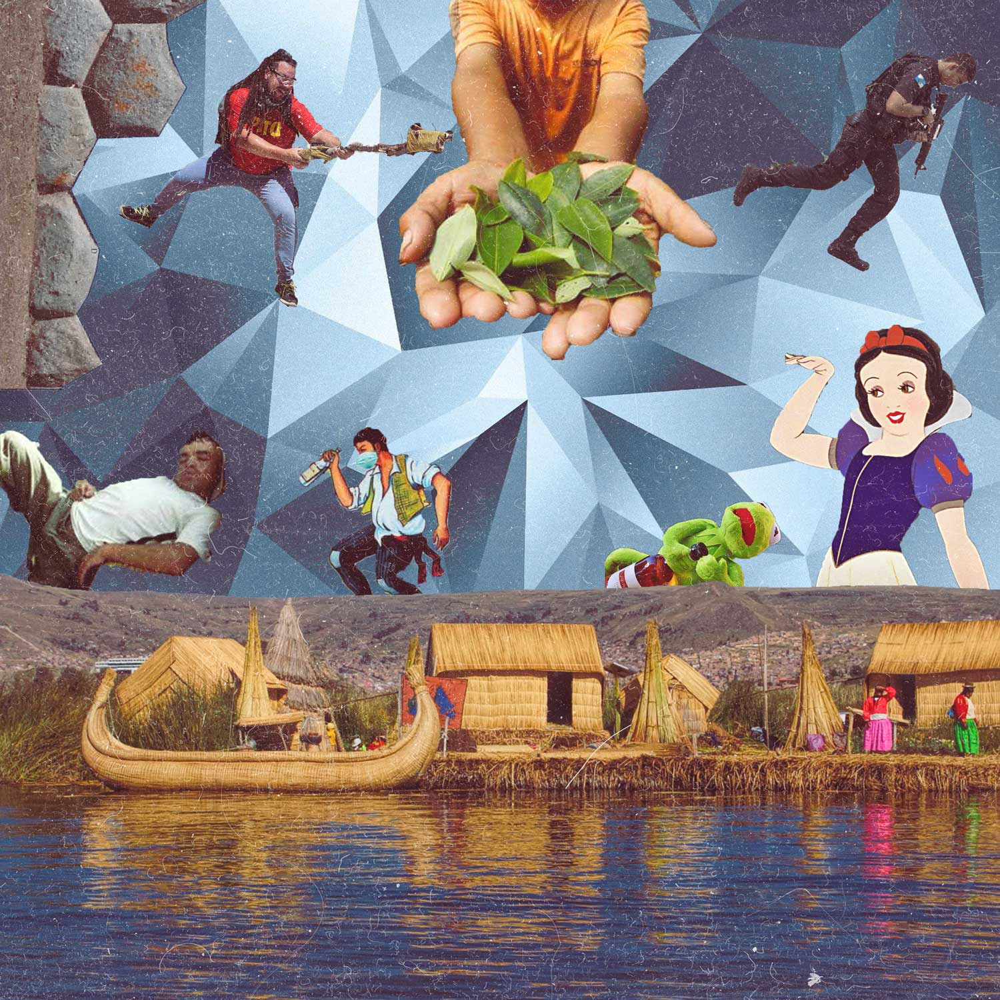
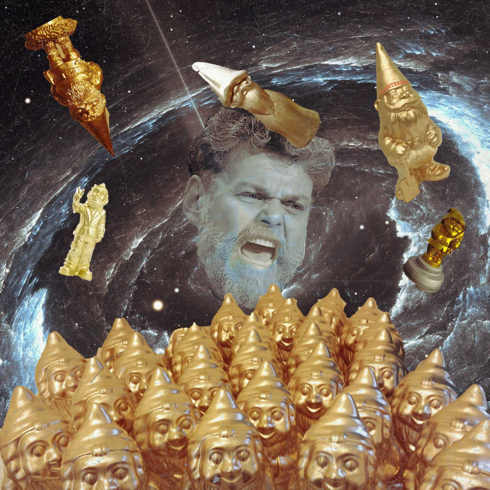
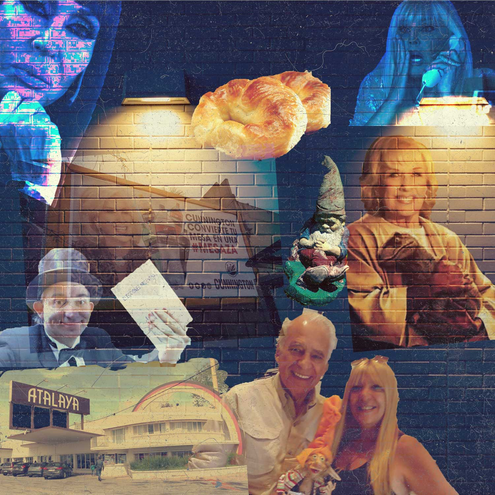

Operación Atalaya

No hay nada peor que levantarse con un grito. Especialmente, si estás de vacaciones con amigos; peor aún, cuando te quedaste escabiando como un cosaco toda la noche y para mal de males, estás en el culo del mundo: o sea, en el norte argentino a no sé cuántos metros sobre el nivel del mar.
Bueno, la cosa es que escuché el grito de la dueña del hostel:
—¡Ayyyyyyyyyyy, diosiiiiiiitooooooooo! —Así de doloroso fue para los oídos.
Y me levanté bruscamente, no sin antes golpearme la cabeza con la escalera de la cama de arriba, donde estaba durmiendo Juan el Gris (¡cómo ronca el hijo de Cuca!).
—¿Qué pasó? —preguntó este casi a modo de reflejo, con voz de ultratumba y aliento a muerto vivo.
Bajamos como pudimos, medio borrachos y estúpidos por la altitud, y encontramos al parroquiano de la noche anterior, con el que habíamos tomado un millón de jarras de vino, tirado en una zanja. Ahí nomás, a metros de la puerta de entrada.
Lo raro no era que estuviese tirado. A más de uno por el pedo le pasaba eso de quedarse en cualquier lado. Lo que desentonaba, en cambio, era el facón que decoraba su pecho. Me acerqué como una mosca de fruta, en círculos un poco bobos.
—Alfredo… —atinó a decir con su último aliento.
Con el paso de las horas, en un pueblo de cientos de habitantes, el finado fue furor. Tenían para charlar por años. Y sí: cayó todo el mundo, hasta esos viejos que van en muletas a dos por hora. Los primeros lo hicieron con disimulo, como quien no quiere la cosa. Después, a eso del mediodía, ya era un mamarracho. Circulaban más teorías que en el crimen de María Marta, todo de boca en boca. Y a modo de teléfono descompuesto, lo que había empezado con un asunto de polleras, para eso de las seis de la tarde, ya era una conspiración internacional masónica para tapar un magnicidio en Burkina Faso.
¡Ojo!, nosotros no nos quedamos atrás y relacionamos el asesinato con la historia del enano de oro que nos había contado el susodicho hasta bien entrada la noche. Pero no tenía sentido, o sea, nos encantan esas teorías rebuscadas. Pero la explicación más simple es siempre la más probable; y en este caso, podía ser solo una pelea de borrachos con un final poco afortunado. Lo raro, lo que dio leña al fuego, fue el nombre invocado.
—Pucha —declaró doña Rosa, la dueña del hospedaje—, que yo sepa, no hay ningún Alfredo por estos pagos. Será algún familiar, vaya uno a saber.
Nosotros sí conocíamos a un Alfredo, era un casero muy malvado que había secuestrado a mi enanito de crochet mágico unos meses atrás. Pero esa historia era cosa del pasado. Y además: no había hilo conductor. El pobre paisano solo había compartido con nosotros una anécdota de pulpería.
Una historia sobre cómo, escapando de la Policía en un paso fronterizo, había caminado por días y noches hasta perder el conocimiento a orillas del Titicaca. Todavía recordaba sus palabras.
—Mis pies eran una miseria: venía comiendo yuyos silvestres, frutos y alimañas de todo tipo. ¡Cagaba verde! La cosa es que una tribu me rescató y pasé con ellos una temporada hasta recuperarme.
Fue entonces cuando mencionó al enano de oro. En tono de confidencia, dejó entrever que se trataba de un enano mágico.
—La tribu lo hacía responsable de la longevidad de los chamanes… Creer o reventar.

***
Nada tenía sentido. El enano de oro, la tribu, el paisano y el nombre de Alfredo. ¿Sería el mismo? Lo pensábamos muerto, pero es cierto que no había aparecido su cuerpo tras la explosión. Y sabíamos que era capaz de cosas muy oscuras como robar al enano Adán de la exposición internacional de gnomos mientras viajaba con una delegación para cantar Shima Uta.
Algo nos empujó a partir en busca de la misteriosa tribu. Si Alfredo estaba relacionado, tenía que ver con el enano de oro.
Cruzamos la frontera y en el ocaso del cuarto día reconocimos en la ladera de un valle escampado las altas murallas de la ciudadela de los enanos. Dimos un par de vueltas y encontramos cinco ancianos en un templo.
—Hola, nosotros ser amigos —dije en son de respeto moviendo las manos para ambos lados.
Todos pusieron cara de “este es un boludo importante”, y una señora con pocos dientes nos invitó a sentarnos.
—Entendemos español, k'ara runa. Por favor, no hable como bobo.
Me disculpé y conté la historia del parroquiano y el enano de oro. La mujer recordaba al contrabandista con cariño.
—Unos meses después de su partida, una patrulla comando arrasó con nuestra aldea y se llevó a Llokalla…
—Disculpe —interrumpí—, ¿y eso?
—Así le decimos nosotros al enano de oro, nuestro protector. Desafortunadamente, con el robo vino la desgracia: malas cosechas, hambre y muerte. Somos los últimos con vida.

***
Al partir, prometimos hacer todo lo posible para devolver al enano. En Buenos Aires, recorrimos archivos y bibliotecas hasta el hartazgo, navegamos por foros, hablamos con antropólogos e historiadores, pero nadie sabía nada.
Creo que fue a fines de octubre cuando Juan el Gris reparó en una foto de Mirtha mientras hojeaba una Caras de los noventa en los puestos del parque Centenario. En la foto, Mirtha y Alfredo estaban sentados en el living del lujoso piso de avenida del Libertador de la diva y en un rincón, inadvertido, se veía un enano dorado que desentonaba con el resto del afrancesado mobiliario.
—Está todo vinculado —me dijo Juan exaltado mientras pedaleaba hacia mi casa—. En veinte llego y te explico todo.
Entre cervezas y maní japonés, fuimos atando cabos. Existían indicios para establecer una correlación entre la longevidad de los chamanes y la de Mirtha, y como si eso fuese poco, descubrimos que la diva había sido una de las catapultadoras de Alfredo a la fama. Una declaración en el programa de Bernardo Neustadt fue clave: “Ay, Bernardito, mirá si yo no voy a tener sentido del humor, si fui la productora ejecutiva de Cha Cha Cha”.
Nos entrevistamos con Rial, Polino, Moria, el Mago sin Dientes y todos coincidían en que había gato encerrado en el espectacular envejecimiento de la cara de Cunnigton. Muchos se lo tomaban en joda y decían, por ejemplo, que había servido de inspiración a Wilde para El retrato de Dorian Grey, que era más vieja que los dinosaurios y otras gansadas del estilo. En cambio, Susana G., su histórica archienemiga, movió cielo y tierra para dar con el secreto antiage. Habló con cirujanos, deportólogos, nutricionistas, dermatólogos, cosmetólogos, incluso tarotistas. Todo en vano.

***
Una noche de noviembre, una fuente confirmó lo que sospechábamos. La diva de Cunnington tenía cámaras infrarrojas, sensores de movimiento y paredes reforzadas en su departamento.
—El enano sigue ahí —dije entusiasmado.
—Sí —respondió Juan—, pero entrar es más difícil que operar a una hormiga con guantes de boxeo.
Ningún plan parecía posible hasta que, en uno de los últimos programas del año, Mirtha anunció que arrancaría la temporada estival y transmitiría desde La Feliz, también conocida como La Capital del Pulóver, y oficialmente como Mar del Plata.
Los últimos minutos del episodio los usó para presentar a su coanfitrión en cámara: Alfredo entró en escena con un traje blanco impoluto, digno de una publicidad de Julián Weich.
—¡Está vivo! —dije—. Ya sabía yo que estos dos estaban trabajando juntos. Alfredo, con tal de aparecer en la tele, es capaz de cualquier cosa: cantar en japonés, vestirse de Batman, matar un paisano y robar enanos de jardín, crochet y oro. Si solo tuviésemos pruebas…
—¿Viste que está reflaco el gordo? —señaló Juan—. ¿Estará a dieta?
—¿Estás pensando lo mismo que yo?
—No creo.
—Tengo una corazonada.
Hackeamos la cuenta Gmail del doctor Cormillot y encontramos un correo con un turno de Alfredo agendado para la semana entrante.
Nos preparamos para seguirlo de incógnito y un lunes logramos, en la puerta de la clínica, poner un dispositivo rastreador en su auto y pegar un micrófono de contacto en su celular.
Siguiendo sus rastros y analizando sus llamadas, supimos que él era el responsable del traslado del enano de oro a la Feliz unos días antes de la temporada.
Por los registros de Cormillot, también sabíamos que el exgordo tenía permitido comer unas medialunas de camino a la costa.
—Seguro para en Atalaya —dijo Juan.
—Es nuestra única oportunidad —agregué.
Ingeniamos un plan ridículo. Juan viajó a Chascomús y consiguió un puesto de jornalero en la caja del establecimiento.
Ese día cruzamos dedos y cuando Alfredo pidió la promo de dos docenas, Juan (con bigotes para que no lo reconociera y poniendo la voz más gruesa) le ofreció una medialuna extra sin cargo.
Alfredo no pudo contenerse y dio el primer mordisco no bien puso un pie en el estacionamiento. Escondidos, esperamos a que el cloroformo hiciera efecto. La suerte estuvo de nuestro lado y, justo antes de arrancar, cayó sobre el volante.
Nos acercamos con precaución y abrimos el baúl. Agarramos la valija del enano y en su lujar pusimos una igualita llena de piedras. Dejamos al Alfredo durmiendo en el asiento del conductor y partimos en sentido contrario, hacia Buenos Aires.
A la altura de Hudson, ya un poco más relajados, decidí abrir la valija. Tiré del cierre y quedé unos segundos paralizado, contemplando al enorme enano dorado.
Lo agarré de los extremos y sentí algo raro. Miré mis manos y vi pintura fresca.
—Nos cagaron —dije.
Escuchamos un pitido y sentimos la explosión.
Mirtha, la inmortal, había estado siempre un paso delante de nosotros.
¿Qué vino antes: Mirtha o la gallina?

¿Te gustó el cuentito? Si querés saber más sobre enanos mágicos, leé el Frente de Liberación de Enanos de Crochet y no te olvides de compartir.
Ir al cuentoUn cuento de inspiración divina leído por Carla Plastani (@carlaplastani)
Subir Inicio